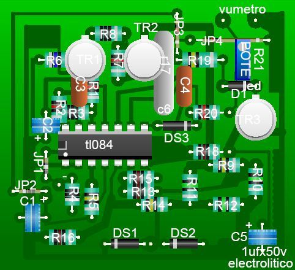
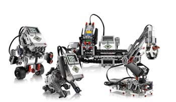
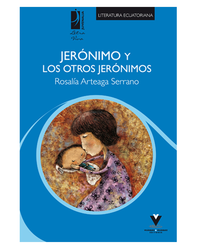

En esta página podras encontrar información sobre mi
En esta página podras encontrar información sobre mi
Mi nombre es Brian Aguirre, tengo 27 años estudio en la Universidad Nacional de Chimborazo en la facultad de ciencias de la educación , pedagogía de la informatica curso el septimo semestre
Este es mi curriculum vitae
CurriculumMe gusta la electronica, me gusta realizar circuitos electronicos
Disfruto armando robots de lego y programarlos
me encanta escuchar musica nacional , salsa, Rock, Pop
El libro que he leido que me gusto se llama jeronimo y los otros jeronimos
